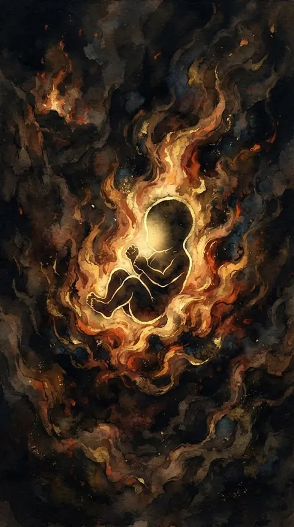

火之迦具土神古事記の神々 其の二十七
生まれるとき母を焼き、父に斬られた火の神・火之迦具土神（ひのかぐつちのかみ）。古事記での名は火之夜芸速男神（ひのやぎはやおのかみ）、またの名を火之炫毘古神（ひのかかびこのかみ）・火之迦具土神といいます。
古事記と、名前の意味
- 神生みの終わりに生まれた火の神です。母の伊耶那美は、この子を生んだために体を焼かれ、病に伏して、やがてこの世を去ります
- 伊耶那岐は「愛しい妻よ、子ひとりと引き換えになろうとは」と嘆き、枕元と足元を這いまわって泣きました
- やがて伊耶那岐は十拳剣を抜き、わが子・迦具土神の首を斬ります
- 「カグ」は、火がほのかに揺らめくさまとも、焼けて香るにおいの「香」ともいわれます
- 火の起源を語る神話で、火山の噴火や焼畑のようすを映しているという説もあります
- 静岡県浜松市の秋葉山本宮秋葉神社に、火之迦具土大神として祀られています（火防の神）
長編を読む
古事記の「かわいそうな神さま」10柱｜流された最初の子、見られて海へ帰った姫
同じ場面の神さま（神生み）

イメージ画
1分で見る
1分の動画は
12月5日 20時に公開します
12月5日 20時に公開します
出典と画像
参考：國學院大學「古事記ビューアー」「神名データベース」・秋葉山本宮秋葉神社 公式サイト
写真：秋葉山本宮秋葉神社 下社 撮影 takami torao／Wikimedia Commons／パブリックドメイン
写真以外の画像はイメージです。
動画のナレーション：VOICEVOX:青山龍星